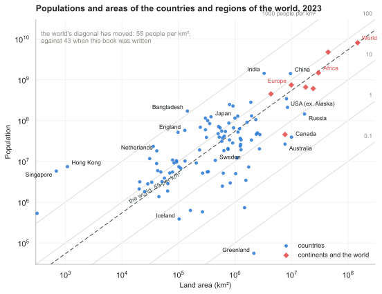
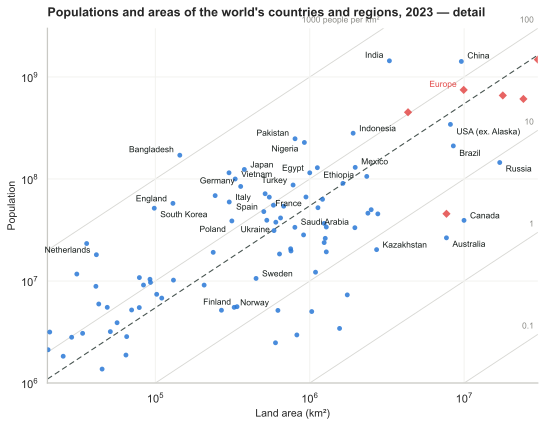
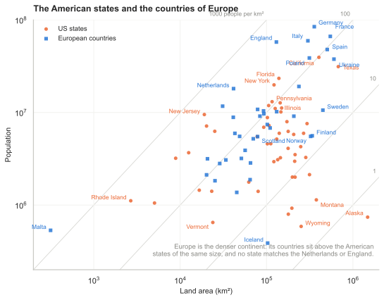

J Populations and areas
Population densities
Figure J.1 shows the areas of various regions versus their populations. Diagonal lines on this diagram are lines of constant population density. Bangladesh, on the rightmost-but-one diagonal, has a population density of 1000 per square kilometre; India, England, the Netherlands, and Japan have population densities one third that: about 350 per km2. Many European countries have about 100 per km2. At the other extreme, Canada, Australia, and Libya have population densities of about 3 people per km2. The central diagonal line marks the population density of the world: 43 people per square kilometre. America is an average country from this point of view: the 48 contiguous states of the USA have the same population density as the world. Regions that are notably rich in area, and whose population density is below the average, include Russia, Canada, Latin America, Sudan, Algeria, and Saudi Arabia.
Of these large, area-rich countries, some that are close to Britain, and with whom Britain might therefore wish to be friendly, are Kazakhstan, Libya, Saudi Arabia, Algeria, and Sudan.
Updated to 2023 (this edition). Both tables below now carry MacKay’s 2005 populations beside current ones, and the densities are recomputed. Four of the sentences above have quietly stopped being true. The world’s population density is no longer 43 per km2 but 55, because the population went from 6.44 to 8.09 billion on a fixed amount of land. Bangladesh is no longer at 1000 per km2 but 1190. The group MacKay put together at “about 350” has come apart: England is now 444, India 438 and the Netherlands 436, while Japan has fallen to 330, because Japan’s population is shrinking and the others’ are not. And America is no longer the average country: the contiguous states sit at 42 per km2 against a world at 55, so the United States has become distinctly roomier than the world it used to match. Africa carries most of the change on its own, from 26 people per km2 to 49, a population that nearly doubled in eighteen years.
The land areas have not moved, which is the point of putting them in a table with populations. Every one of these shifts is a numerator.

Figure J.1. Populations and areas of countries and regions of the world. Both scales are logarithmic. Each sloping line identifies a population density; countries with highest population density are towards the lower right, and lower population densities are towards the upper left. These data are provided in tabular form below.

Figure J.1a. Redrawn for this edition. The same plot from the 2023 data in table J.5, on the same logarithmic scales and with the same organising device. The dashed line is the world’s own density, which has moved from 43 people per km2 to 55 since MacKay drew figure J.1. Our World in Data keeps this quantity current at ourworldindata.org/grapher/population-density.

Figure J.2. Populations and areas of countries and regions of the world. Both scales are logarithmic. Sloping lines are lines of constant population density. This figure shows detail from figure J.1 (p338). These data are provided in tabular form below.

Figure J.2a. Redrawn for this edition. The detail view, on 2023 data, covering the crowded middle of figure J.1a where most countries sit.
| Region | Population (2005) | Population (2023) | Land area (km²) | People per km² (2023) | Area each (m², 2023) |
|---|---|---|---|---|---|
| World | 6 440 000 000 | 8 090 000 000 | 148 000 000 | 55 | 18 300 |
| Asia | 3 670 000 000 | 4 780 000 000 | 44 500 000 | 107 | 9 320 |
| Africa | 778 000 000 | 1 480 000 000 | 30 000 000 | 49 | 20 300 |
| Europe | 732 000 000 | 747 000 000 | 9 930 000 | 75 | 13 300 |
| North America | 483 000 000 | 609 000 000 | 24 200 000 | 25 | 39 800 |
| Latin America | 342 000 000 | 433 000 000 | 17 800 000 | 24 | 41 100 |
| Oceania | 31 000 000 | 45 600 000 | 7 680 000 | 5.9 | 169 000 |
| Antarctica | 4 000 | — | 13 200 000 | — | — |
Table J.3. Population densities of the continents. These data are displayed graphically in figures J.1 and J.2. MacKay’s populations are from 2005; the 2023 column and the densities computed from it were added in this edition, from the UN World Population Prospects via Our World in Data. Land areas are MacKay’s. “Latin America” here is South America, which is how MacKay’s areas divide the continent; Antarctica has no permanent population to speak of.

Figure J.4. Populations and areas of the States of America and regions around Europe.

Figure J.4a. Redrawn for this edition. Table J.5 carries no state-level rows, so the American data here is fetched separately: population estimates for 2024 and land areas from the Census Bureau’s gazetteer, against the European countries from table J.5. The comparison MacKay drew survives intact — Europe is the denser continent, its countries sitting consistently above American states of the same area, and no state comes close to England or the Netherlands. California has roughly the population of Poland on two-thirds of the land, and Alaska, at 0.5 people per km2, is emptier than anything in Europe — about seven times sparser than Iceland.
The table of regions
| Region | Population (2005) | Population (2023) | Land area (km²) | People per km² (2023) | Area each (m², 2023) |
|---|---|---|---|---|---|
| Afghanistan | 29 900 000 | 41 500 000 | 647 000 | 64 | 15 600 |
| Africa | 778 000 000 | 1 480 000 000 | 30 000 000 | 49 | 20 300 |
| Alaska | 655 000 | 733 000 | 1 480 000 | 0.5 | 2 020 000 |
| Albania | 3 560 000 | 2 810 000 | 28 700 | 98 | 10 200 |
| Algeria | 32 500 000 | 46 200 000 | 2 380 000 | 19 | 51 600 |
| Angola | 11 100 000 | 36 700 000 | 1 240 000 | 30 | 33 700 |
| Antarctica | 4 000 | — | 13 200 000 | — | — |
| Argentina | 39 500 000 | 45 500 000 | 2 760 000 | 16 | 60 600 |
| Asia | 3 670 000 000 | 4 780 000 000 | 44 500 000 | 107 | 9 320 |
| Australia | 20 000 000 | 26 500 000 | 7 680 000 | 3.4 | 290 000 |
| Austria | 8 180 000 | 9 130 000 | 83 800 | 109 | 9 180 |
| Bangladesh | 144 000 000 | 171 000 000 | 144 000 | 1 190 | 840 |
| Belarus | 10 300 000 | 9 120 000 | 207 000 | 44 | 22 700 |
| Belgium | 10 000 000 | 11 700 000 | 31 000 | 378 | 2 650 |
| Bolivia | 8 850 000 | 12 200 000 | 1 090 000 | 11 | 89 000 |
| Bosnia & Herzegovina | 4 020 000 | 3 190 000 | 51 100 | 62 | 16 000 |
| Botswana | 1 640 000 | 2 480 000 | 600 000 | 4.1 | 242 000 |
| Brazil | 186 000 000 | 211 000 000 | 8 510 000 | 25 | 40 300 |
| Bulgaria | 7 450 000 | 6 800 000 | 110 000 | 62 | 16 200 |
| CAR | 3 790 000 | 5 150 000 | 622 000 | 8.3 | 121 000 |
| Canada | 32 800 000 | 39 300 000 | 9 980 000 | 3.9 | 254 000 |
| Chad | 9 820 000 | 19 300 000 | 1 280 000 | 15 | 66 300 |
| Chile | 16 100 000 | 19 700 000 | 756 000 | 26 | 38 500 |
| China | 1 300 000 000 | 1 420 000 000 | 9 590 000 | 148 | 6 740 |
| Colombia | 42 900 000 | 52 300 000 | 1 130 000 | 46 | 21 600 |
| Croatia | 4 490 000 | 3 900 000 | 56 500 | 69 | 14 500 |
| Czech Republic | 10 200 000 | 10 800 000 | 78 800 | 137 | 7 290 |
| DRC | 60 000 000 | 106 000 000 | 2 340 000 | 45 | 22 100 |
| Denmark | 5 430 000 | 5 950 000 | 43 000 | 138 | 7 230 |
| Egypt | 77 500 000 | 115 000 000 | 1 000 000 | 115 | 8 730 |
| England | 49 600 000 | 57 700 000 | 130 000 | 444 | 2 250 |
| Estonia | 1 330 000 | 1 370 000 | 45 200 | 30 | 33 100 |
| Ethiopia | 73 000 000 | 129 000 000 | 1 120 000 | 115 | 8 700 |
| Europe | 732 000 000 | 747 000 000 | 9 930 000 | 75 | 13 300 |
| European Union | 496 000 000 | 451 000 000 | 4 330 000 | 104 | 9 610 |
| Finland | 5 220 000 | 5 600 000 | 338 000 | 17 | 60 300 |
| France | 60 600 000 | 66 400 000 | 547 000 | 121 | 8 230 |
| Gaza Strip | 1 370 000 | — | 360 | — | — |
| Germany | 82 400 000 | 84 500 000 | 357 000 | 237 | 4 220 |
| Greece | 10 600 000 | 10 200 000 | 131 000 | 78 | 12 800 |
| Greenland | 56 300 | 56 000 | 2 160 000 | 0.026 | 38 600 000 |
| Hong Kong | 6 890 000 | 7 440 000 | 1 090 | 6 830 | 146 |
| Hungary | 10 000 000 | 9 690 000 | 93 000 | 104 | 9 600 |
| Iceland | 296 000 | 388 000 | 103 000 | 3.8 | 266 000 |
| India | 1 080 000 000 | 1 440 000 000 | 3 280 000 | 438 | 2 280 |
| Indonesia | 241 000 000 | 281 000 000 | 1 910 000 | 147 | 6 790 |
| Iran | 68 000 000 | 90 600 000 | 1 640 000 | 55 | 18 100 |
| Ireland | 4 010 000 | 5 200 000 | 70 200 | 74 | 13 500 |
| Italy | 58 100 000 | 59 500 000 | 301 000 | 198 | 5 060 |
| Japan | 127 000 000 | 124 000 000 | 377 000 | 330 | 3 030 |
| Kazakhstan | 15 100 000 | 20 300 000 | 2 710 000 | 7.5 | 133 000 |
| Kenya | 33 800 000 | 55 300 000 | 582 000 | 95 | 10 500 |
| Latin America | 342 000 000 | 659 000 000 | 17 800 000 | 37 | 27 000 |
| Latvia | 2 290 000 | 1 880 000 | 64 500 | 29 | 34 300 |
| Libya | 5 760 000 | 7 310 000 | 1 750 000 | 4.2 | 240 000 |
| Lithuania | 3 590 000 | 2 850 000 | 65 200 | 44 | 22 800 |
| Madagascar | 18 000 000 | 31 200 000 | 587 000 | 53 | 18 800 |
| Mali | 12 200 000 | 23 800 000 | 1 240 000 | 19 | 52 200 |
| Malta | 398 000 | 533 000 | 316 | 1 690 | 593 |
| Mauritania | 3 080 000 | 5 020 000 | 1 030 000 | 4.9 | 205 000 |
| Mexico | 106 000 000 | 130 000 000 | 1 970 000 | 66 | 15 200 |
| Moldova | 4 450 000 | 3 070 000 | 33 800 | 91 | 11 000 |
| Mongolia | 2 790 000 | 3 430 000 | 1 560 000 | 2.2 | 455 000 |
| Mozambique | 19 400 000 | 33 600 000 | 801 000 | 42 | 23 800 |
| Myanmar | 42 900 000 | 54 100 000 | 678 000 | 80 | 12 500 |
| Namibia | 2 030 000 | 2 960 000 | 825 000 | 3.6 | 278 000 |
| Netherlands | 16 400 000 | 18 100 000 | 41 500 | 436 | 2 290 |
| New Zealand | 4 030 000 | 5 170 000 | 268 000 | 19 | 51 800 |
| Niger | 11 600 000 | 26 200 000 | 1 260 000 | 21 | 48 200 |
| Nigeria | 128 000 000 | 228 000 000 | 923 000 | 247 | 4 050 |
| North America | 483 000 000 | 609 000 000 | 24 200 000 | 25 | 39 800 |
| Norway | 4 593 000 | 5 520 000 | 324 000 | 17 | 58 700 |
| Oceania | 31 000 000 | 45 600 000 | 7 680 000 | 5.9 | 169 000 |
| Pakistan | 162 000 000 | 248 000 000 | 803 000 | 308 | 3 240 |
| Peru | 27 900 000 | 33 800 000 | 1 280 000 | 26 | 37 800 |
| Philippines | 87 800 000 | 115 000 000 | 300 000 | 383 | 2 610 |
| Poland | 39 000 000 | 38 800 000 | 313 000 | 124 | 8 070 |
| Portugal | 10 500 000 | 10 400 000 | 92 300 | 113 | 8 850 |
| Republic of Macedonia | 2 040 000 | 1 830 000 | 25 300 | 72 | 13 800 |
| Romania | 22 300 000 | 19 100 000 | 237 000 | 81 | 12 400 |
| Russia | 143 000 000 | 145 000 000 | 17 000 000 | 8.6 | 117 000 |
| Saudi Arabia | 26 400 000 | 33 300 000 | 1 960 000 | 17 | 58 900 |
| Scotland | 5 050 000 | 5 490 000 | 78 700 | 70 | 14 300 |
| Serbia & Montenegro | 10 800 000 | 7 410 000 | 102 000 | 73 | 13 800 |
| Singapore | 4 420 000 | 5 790 000 | 693 | 8 350 | 120 |
| Slovakia | 5 430 000 | 5 520 000 | 48 800 | 113 | 8 840 |
| Slovenia | 2 010 000 | 2 120 000 | 20 200 | 105 | 9 540 |
| Somalia | 8 590 000 | 18 400 000 | 637 000 | 29 | 34 700 |
| South Africa | 44 300 000 | 63 200 000 | 1 210 000 | 52 | 19 100 |
| South Korea | 48 400 000 | 51 700 000 | 98 400 | 526 | 1 900 |
| Spain | 40 300 000 | 47 900 000 | 504 000 | 95 | 10 500 |
| Sudan | 40 100 000 | 50 000 000 | 2 500 000 | 20 | 50 000 |
| Suriname | 438 000 | 629 000 | 163 000 | 3.9 | 259 000 |
| Sweden | 9 000 000 | 10 600 000 | 449 000 | 23 | 42 600 |
| Switzerland | 7 480 000 | 8 870 000 | 41 200 | 215 | 4 640 |
| Taiwan | 22 800 000 | 23 300 000 | 35 900 | 650 | 1 540 |
| Tanzania | 36 700 000 | 66 600 000 | 945 000 | 70 | 14 200 |
| Thailand | 65 400 000 | 71 700 000 | 514 000 | 139 | 7 170 |
| Turkey | 69 600 000 | 87 300 000 | 780 000 | 112 | 8 940 |
| Ukraine | 47 400 000 | 37 700 000 | 603 000 | 63 | 16 000 |
| United Kingdom | 59 500 000 | 68 700 000 | 244 000 | 281 | 3 550 |
| USA (ex. Alaska) | 295 000 000 | 343 000 000 | 8 150 000 | 42 | 23 800 |
| Venezuela | 25 300 000 | 28 300 000 | 912 000 | 31 | 32 200 |
| Vietnam | 83 500 000 | 100 000 000 | 329 000 | 305 | 3 280 |
| Wales | 2 910 000 | 3 160 000 | 20 700 | 153 | 6 540 |
| Western Sahara | 273 000 | 580 000 | 266 000 | 2.2 | 459 000 |
| World | 6 440 000 000 | 8 090 000 000 | 148 000 000 | 55 | 18 300 |
| Yemen | 20 700 000 | 39 400 000 | 527 000 | 75 | 13 400 |
| Zambia | 11 200 000 | 20 700 000 | 752 000 | 28 | 36 300 |
Table J.5. Regions and their population densities. Populations above 50 million and areas greater than 5 million km2 are highlighted. These data are displayed graphically in figure J.1 (p338). MacKay’s populations are from 2005; the 2023 column and the densities computed from it were added in this edition. Country and continent figures are UN World Population Prospects via Our World in Data; England, Scotland and Wales are ONS mid-2023 estimates; Alaska is taken as 0.73 million, and “USA (ex. Alaska)” is the United States less that. Two rows carry no current figure: Antarctica, which has no permanent population, and the Gaza Strip, where no reliable current estimate exists. Three of MacKay’s regions no longer exist as he named them: Serbia & Montenegro separated in 2006 and is given here as the two states summed, the Republic of Macedonia is now North Macedonia, and the European Union has lost the United Kingdom and gained Croatia since 2005, so its two columns are not the same union.